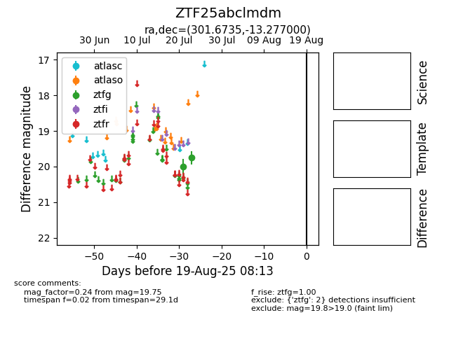

Target ZTF25abclmdm at 2025-08-19 09:59, see:
FINK: fink-portal.org/ZTF25abclmdm
Lasair: lasair-ztf.lsst.ac.uk/objects/ZTF25abclmdm
ALeRCE: alerce.online/object/ZTF25abclmdm
alt names
ZTF25abclmdm (ztf,fink)
coordinates:
equatorial (ra, dec) = (301.6735,-13.27700)
galactic (l, b) = (29.1270,-22.58593)
photometry
last ztfg=19.75
2 ztfg detections
